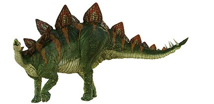

|  |
|
A large, slow moving plant-eater, Stegosaurus would have defended itself from predators like Allosaurus and Ceratosaurus with its powerful spiked tail. The bony plates along its back were embedded in the skin of the animal, not attached to its skeleton, which is why in most fossil finds the plates are separated from the body. When O C Marsh described the first fossil of a Stegosaurus, he concluded that the plates would have lain flat on its back. After finding a specimen that had been covered with mud, which had held the plates in place, Marsh realised that they stood vertically, alternately on either side of the spine. Scientists are not exactly sure what the plates were used for. They may have warned off predators, or allowed members of the same species to recognise each other. Another suggestion is that the plates were used to regulate body temperature. There are tiny grooves in the plate surfaces, possibly where blood vessels would have been. The amount of blood passing through these vessels would determine the amount of heat transfer. Compared with the rest of its body, Stegosaurus had a small head and its brain was around the size of a plum!
The most complete Stegosaurus skeleton ever found went on display in the Natural History Museum in December 2014. Identified as a member of the species Stegosaurus stenops, this spectacular specimen is helping researchers gain new insights into what Stegosaurus would have looked like when it was alive, as well as how it walked, ate and behaved.